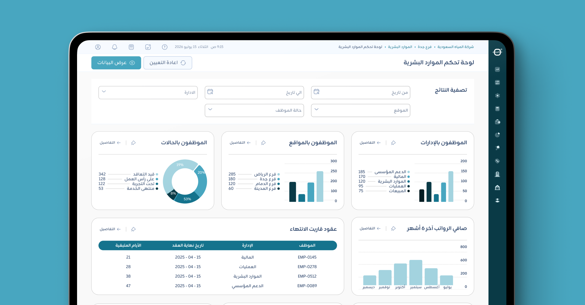
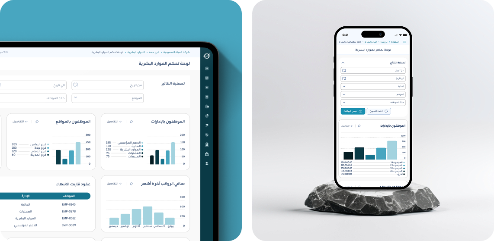
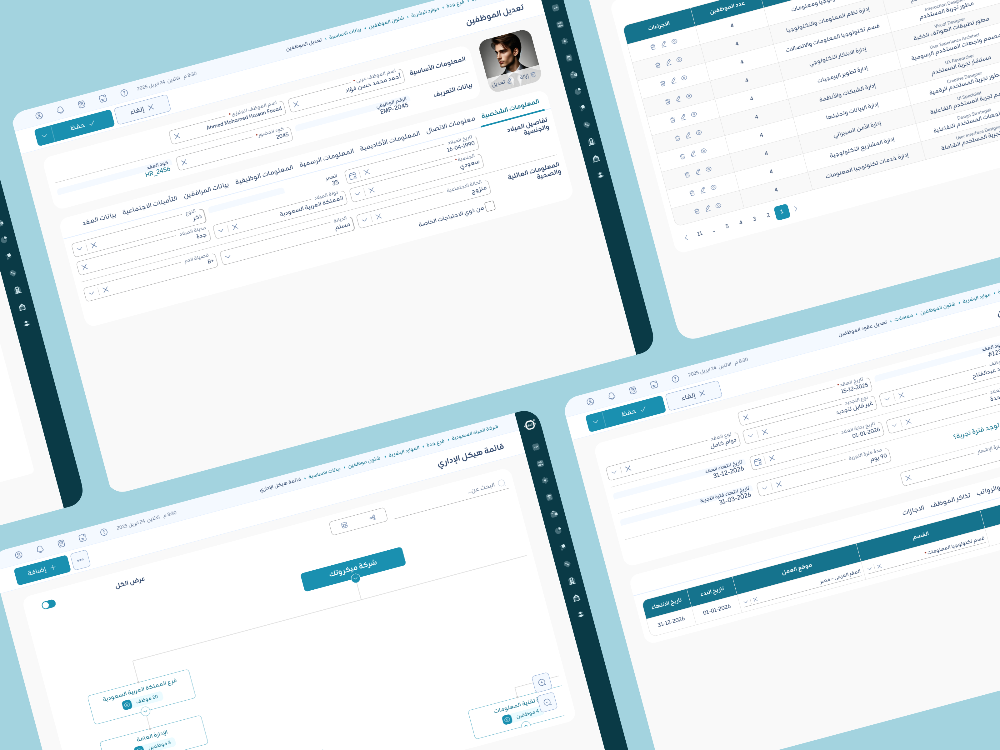
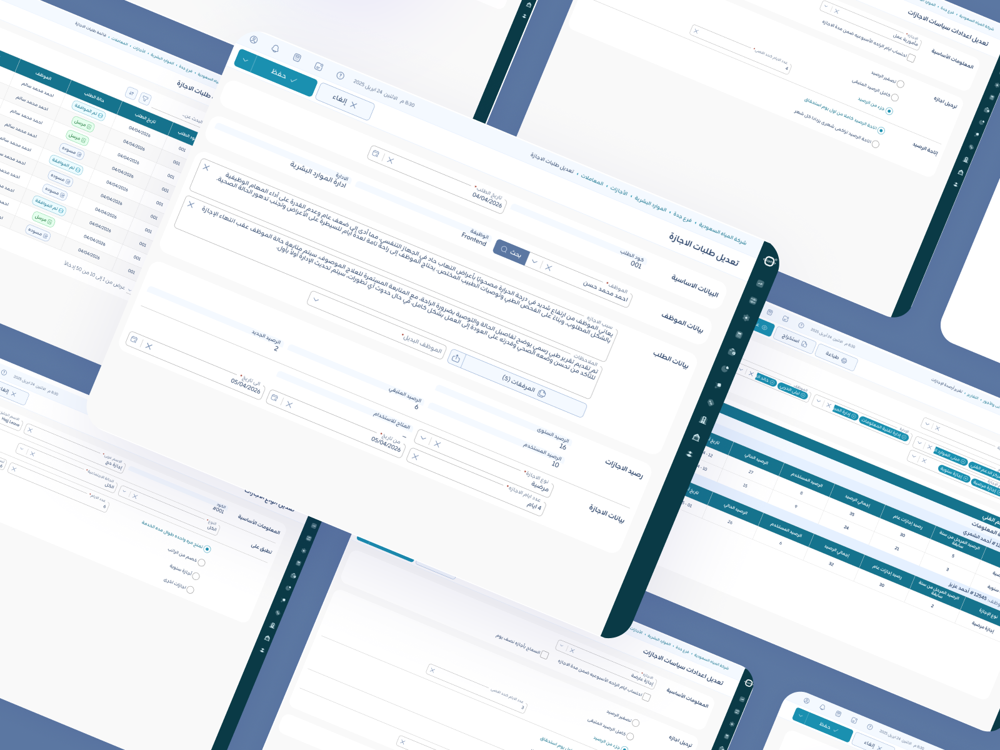
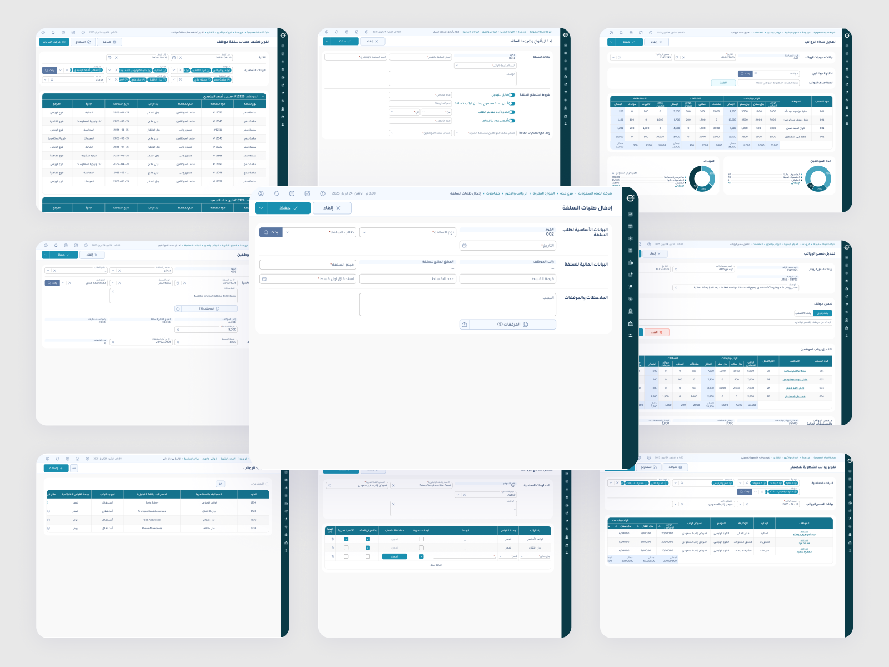

Microtec HRM: One System for Egyptian and Saudi Labor Laws, Built to Stay Easy at Scale
I designed an enterprise HR platform for multi-branch companies in Egypt and Saudi Arabia, where Egyptian and Saudi users work in the same product under their own labor rules, and where daily tasks stay simple even with large workforces.

Context & Scope
Microtec HRM is a cloud-based platform that Egyptian or Saudi companies can adopt to manage their workforce. It replaces scattered spreadsheets, disconnected biometric devices, and paper approval loops. The challenge : was to build one product that fits the labor law of either country and each company’s own policies, while staying clear and easy to use for large organizations.
- Mapped complex HR operations across 4 core modules: Executive Dashboard, Personnel Affairs, Leaves & Attendance, and Payroll.
- Designed policy settings where HR admins choose the applicable labor law Egypt or Saudi Arabia and define the company’s own leave, shift, and payroll policies.
- Structured the system to stay clear and uncluttered for organizations with large employee rosters.
- Validated early with the business team through Figma Make prototypes, then ran Design QA on staging builds.
User Experience Barriers & Business Impact
- Cross-border labor law complexity: Managing teams across Egypt and Saudi Arabia caused frequent calculation errors in leave balances, deductions, and payroll regulations.
- Scalability bottlenecks: Legacy tools and spreadsheets lagged and cluttered the screen when handling large employee rosters, making records hard to manage.
- Scattered, manual workflows: Attendance, employee documents, and requests were managed in silos, wasting hours of HR admin time.
- Design-to-code drift: Complex enterprise tables and multi-tier permission flows risked implementation errors and inconsistencies during development.
Insight 01: Labor rules differ by country and by company, but the experience shouldn’t.
HR admins in Egypt and Saudi Arabia do the same jobs: set policies, approve requests, run payroll. Only the rules change.
- Decision (HR controls the rules): Instead of hard-coding one country’s rules, I designed settings where HR admins choose the applicable labor law and define their company’s own policies for leaves and payroll (such as leave types, balances, and deductions).
- Decision (Complete Arabic/RTL Alignment): Designed the platform with native Arabic/RTL parity, ensuring intuitive data scanning for data-dense tables across regional teams.
Insight 02: Managing large employee rosters Caused Interface Clutter
Large workforce tables were overwhelming to scan, filter, and update when handling massive headcount lists.
- Decision (High-Density, Scan-Friendly UI): Designed clean, data-dense tables with smart multi-filtering, batch actions, and collapsible details to keep 1,000+ employee records fast and simple to navigate.
- Decision (Role-Based Access Control): Created customized views for Admins, Managers, and Employees, ensuring users only see relevant actions and data without system friction.
Workflow Validation & Staging QA
To ensure that dense enterprise flows remained intuitive and error-free before release, we tested interactive prototypes and audited live builds:
- Evaluation: Tested task completion flows for high-volume actions (batch leave approvals, 1,000+ employee filtering, and payroll generation).
- Result: Early prototyping and staging QA eliminated edge-case calculation bugs and ensured complete design parity with zero handoff confusion.
- Launch: Successfully delivered across Web and Mobile with full compliance for Egyptian and Saudi business branches.
Delivering a unified Web & Mobile HRM platform for Microtec
A. Executive Dashboard
High-level workforce KPIs, attendance trends, and 1-tap pending approvals.

B. Personnel Affairs
Centralized digital employee records, contracts, and role-based permissions for 1,000+ staff.

C. Leaves, Attendance & Shift Policies
Automated leave balances, shift scheduling, and localized leave policies for Egypt and Saudi Arabia.

D. Payroll & Compensation & Loan Advances
Handling salary breakdowns, monthly payrolls, bonuses, deductions, and financial requests.Multi-currency salary calculations, automated deductions, allowances, and advance requests.

Impact & Results
- Dual Labor Law Compliance: Successfully unified Egyptian and Saudi labor regulations into a single intuitive platform used by teams across both countries.
- Scalability for 1,000+ Employees: Built a high-density, accessible interface that makes managing enterprise-scale workforce data simple, fast, and clutter-free.
- Seamless AI-Driven Handoff: Eliminated implementation inconsistencies by connecting Figma design tokens directly to Cursor via Figma MCP and conducting direct Design QA.